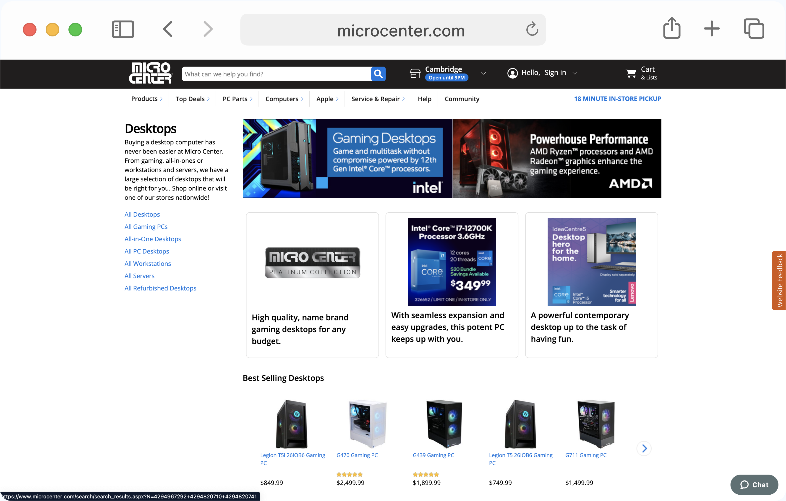
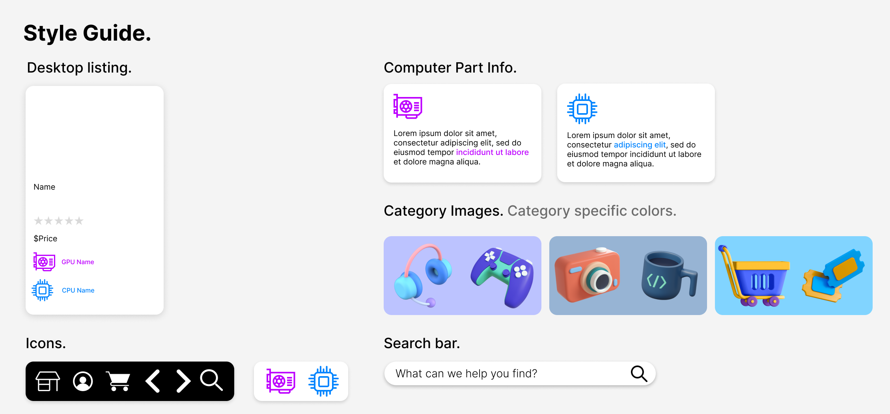
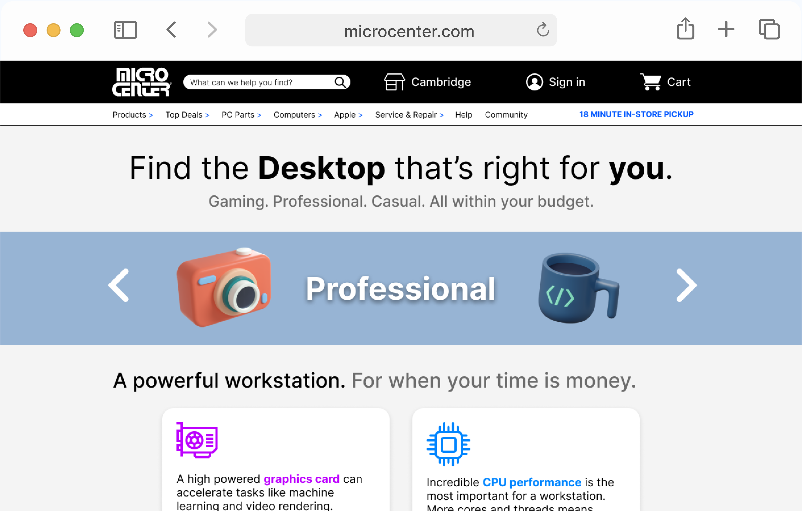

Redesigning Micro Center's Desktop Page
Overview
The aim of this project was to practice the workflow of redesigning a website. After finding a candidate website, I analyzed and identified flaws in the existing interface, created low-fidelity and high-fidelity prototypes for various screen sizes, and then built a responsive website based on those prototypes.
Identifying Usability Problems
Picking a Web Page
I chose to use Micro Center's desktop page for my responsive redesign. The goal of this page is to help customers find a desktop to suit their needs. Its confusing layout and overemphasis on brand names makes this process extremely difficult instead of seamless. Overall the page seems conflicted in its purpose: it can not decide whether it wants to show you categories of computers or individual desktops.
Finding Problems
In order to effectively redesign the site, I first identified particular problems with the original page:
- There is no logical hierarchy which dictates the order of what is listed.
- The site seems to be confused over what archetypes it can group its users into. It makes reference to a “Pro” audience, a “Gaming” audience, and a general user group, but seems conflicted over what computers best cater to these audiences.
- Legibility is often on a problem on the page. The use of images containing text means that the type is often too small and simply unreadable on smaller screen sizes. Text for much of the page is also often too small to be properly legible.
- The site hides information that would be helpful when browsing the desktop listings rather than displaying it prominently. For example, customers are most interested in the GPU and CPU of the computers they're looking at. Displaying these would get rid of unnecessarily clicking into desktops and would make site navigation much more intentional.
Accessibility
I used WebAIM WAVE to detect accessibility problems and confirm the ones I suspected when observing the site myself. It detected problems with low constrast as well as many instances of text that was too small to be legible. This confirms my problems with the webpage and lent credence to the need for a redesign.
Visual Redesign
Low-Fidelity Prototyping
To address the problems I found with the original webpage, I designed low-fidelity prototypes for each of the three screen sizes I will be supporting (desktop, tablet, and mobile). On each of the prototypes I annotated how they address the problems outlined above. The color of the annotations match the colors of the problems:
- Page Hierarchy
- User Archetypes
- Legibility
- Information Visibility
Visual Design Style Guide
Before I started my high-fidelity prototype I created a style guide that displays the main colors, typography, and reusable components that are used in the design. The category images I used for the style guide and for the high fidelity design were taken from IconScout.
High-Fidelity Prototyping
After getting a rough design of the website done, it was time to focus on the details. I created a high-fidelity prototype of the website for each of the supported screen sizes (desktop, tablet, and mobile). I used Figma's prototyping capabilities to make the desktop version of the site somewhat functional. Annotations outline some of the HTML and CSS properties necessary to achieve this design.
Responsive Redesign
The Final Product
Once the high-fidelity prototype was done, I used HTML, CSS, and javascript to create a functional version of the redesigned website. The right and left arrows on the category bar are functional and they change the related page details accordingly!
Coding Sources
Conclusion
Key Takeaways
This project taught me the value of analyzing an interface and looking for areas of improvement. It also taught me the importance of a staged design process: starting with ideation and low-fidelity wireframes before drafting your high-fidelity designs. It also taught me valuable lessons in optimizing interfaces for various screen sizes, and making use of conventions that will be familiar for users of each device.